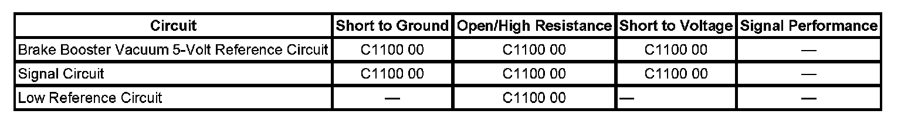

C1101
DTC C1100 or C1101
DTC Descriptor
DTC C1100 00
Brake Booster Vacuum Sensor Performance
Diagnostic Fault Information
Perform the Diagnostic System Check - Vehicle prior to using this diagnostic procedure. Initial Inspection and Diagnostic Overview

Circuit/System Description
The electronic brake control module (EBCM) provides a power 5-volt reference to the brake booster vacuum sensor. The brake booster vacuum sensor converts the change in vacuum levels in the brake booster into a voltage signal. This signal is sent to the EBCM. The voltage signal ranges, from 0.13 to 3.30 volts depending on vacuum levels. The low reference is the return side of the sensor to ground.
Conditions for Running the DTC
^ The ignition is ON.
^ Ignition voltage is greater than 9 volts.
Conditions for Setting the DTC
^ Voltage at the brake booster sensor signal output to the EBCM falls outside the 0.13 to 3.30 volts range for more than 200 milliseconds.
^ The power 5-volts reference is shorted to ground or battery positive.
Action Taken When the DTC Sets
One or more of the following actions may occur:
The red BRAKE Warning indicator turns ON.
Conditions for Clearing the DTC
^ The condition for the DTC is no longer present.
^ The EBCM automatically clears the history DTC when a current DTC is not detected in 100 consecutive drive cycles.
Reference Information
Schematic Reference
Antilock Brake System Schematics
Connector End View Reference
Antilock Brake System Connector End Views
Description and Operation
ABS Description and Operation (Under 8600 GVW ) ABS Description and Operation (Equal to or Over 8600 GVW)
Electrical Information Reference
^ Circuit Testing
^ Connector Repairs
^ Testing for Intermittent Conditions and Poor Connections
^ Wiring Repairs
Scan Tool Reference
Scan Tool Data List for EBCM
Circuit/System Verification
DTC C1100 will set as result of power brake booster vacuum sensor or circuit failure, test for power and ground circuits to the EBCM.
Repair the power or ground circuits.
Circuit/System Testing
1. Ignition OFF, disconnect the 3 way harness connector at the brake booster vacuum sensor.
2. Test for less than 1.0 ohm of resistance between the low reference circuit terminal 2 and ground.
^ If greater than 1.0 ohm, test the low reference circuit for an open/high resistance. If the circuit tests normal, replace the EBCM.
3. Ignition ON, test for 4.5 - 5.3 volts between the 5-volt reference circuit terminal 3 and ground.
^ If less than 4.5 volts, test the 5-volt reference circuit for a short to ground or an open/high resistance. If the circuit tests normal, replace the EBCM.
^ If greater than 5.3 volts, test the 5-volt reference circuit for a short to voltage. If the circuit tests normal, replace the EBCM.
4. Test for 4.5 - 5.3 volts between the 5-volt reference circuit terminal 3 and the signal circuit terminal 1.
^ If less than the specified range, test the signal circuit for an open/high resistance. If the circuit tests normal, replace the EBCM.
^ If greater specified range, test the signal circuit for a short to voltage. If the circuit tests normal, replace the EBCM.
5. If all circuits test normal, test or replace the brake booster vacuum sensor.
Repair Instructions
Perform the Diagnostic System Check - Vehicle after completing the diagnostic procedure. Initial Inspection and Diagnostic Overview
Control Module References after completing the diagnostic procedure.
Repair Verification
Diagnostic Repair Verification